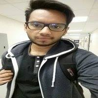

About Me
Born and raised in Bangladesh, I came to USA to study Chemical and Biomolecular Engineering at Georgia Institute of Technology in 2011. Became a part of yellow jackets and a fan of Falcons. It was during my internship, I found my interest in Web development- thanks to my colleague. I decided to pursue my education in Computer Science and I enrolled in Computer Science and I am currently progeressing with both the degrees.
Fun fact: I love playing league of legends on my spare time and I enjoy playing Badminton at Tech. I am a huge fan of Dragon Ball Z and I wish to work with Funimation someday. I also enjoy singing and I have participated at Tech Idol back in 2013. I wasn't able to win it but being able to sing infront of the croud was an experience worth cherishing.
I have been in Georgia for the past 6 years and I have fallen in love with Atlanta and its people. It is fun to claim that I have 2 different houses and I love them equally. I go to Bangladesh once a year to meet with my family and it's a luxury to have different varities of food over there. My friends and I go to differnt restaurants to try out different foods and it's always a fun experience being around friends and family.
Miscellaneous facts about myself: I speak four different languages. I am able to write and read Arabic but I don't know what the words and sentences mean. I am a huge fan of Atlanta Falcons and I am still waiting for the day to see Matt Ryan holding the Super Bowl trophy. I was a Professional Counter Strike player and I have played in many tournaments overseas.